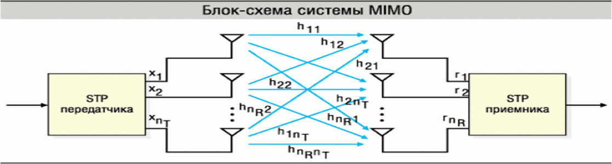
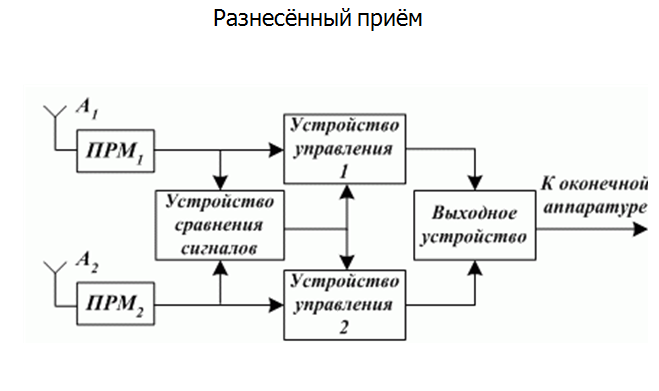
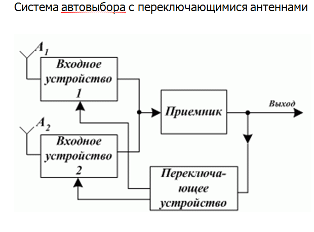
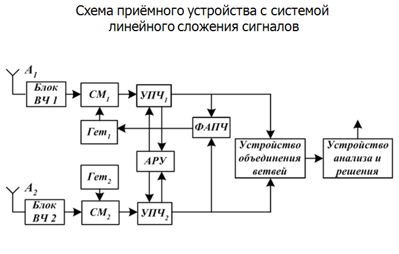

Адаптивные радиолинии. Радиосистемы с пространственно-временной обработкой сигналов
В таких условиях наиболее эффективным путем повышения надежности радиосвязи является ее автоматизация и адаптация.
Для того чтобы в изменяющихся условиях связи получить заданные показатели эффективности необходимо менять параметры радиолинии или ее структуру.
Автоматизированные радиолинии приспосабливающиеся к условиям ведения связи путем изменения своих параметров или структуры с целью достижения наилучшего или заданного качества связи называются АДАПТИВНЫМИ РАДИОЛИНИЯМИ.
Для того чтобы обеспечить адаптивную радиолинию необходимо:
оценивать условия ведения радиосвязи;
оценивать качество своего функционирования;
изменять параметры или структуру с целью достижения заданного качества.
К основным элементам такой радиолинии относятся:
Передатчик.
Приемник.
Передающая оконечная аппаратура.
Приемная оконечная аппаратура.
Вспомогательные устройства, обеспечивающие автоматизацию ведения связи, т.е. аппаратуру автоматизированного ведения связи (АВС). Благодаря высокой системе единого времени и жестким программам, действия контрольно-решающего устройства и устройства управления, одинаковым для обоих корреспондентов, в радиолиниях производится синхронное и синфазное автоматическое вхождение в связь последовательно на каждой из десяти ЗПЧ приемника и передатчика. Вхождение в связь происходит до тех пор, пока на определенной паре частот не произойдет установление радиосвязи между корреспондентами. Факт установления связи определяется, например, по наличию фазирования оконечной аппаратуры обоих корреспондентов за определенный интервал времени.
Качество ведения радиосвязи определяется с помощью контрольно-решающих устройств одновременно у обоих корреспондентов. В случае нарушения связи ее восстановление производится по жесткой программе перебора ЗПЧ аналогично вхождению в связь.
Несмотря на определенные преимущества – возможность автоматического вхождения в связь и ее восстановления – автоматизированные линии имеют существенный недостаток, а именно: большое время установления и восстановления связи, доходящее до десятков минут. Главная причина этого состоит в том, что номера ЗПЧ в процессе работы меняются последовательно по неизменной программе (в порядке возрастания номеров). В результате, после каждой смены ЗПЧ связь восстанавливается на новой паре частот. Причем предварительная информация о возможности установления связи на них отсутствует.
Вместе с тем, практика ведения радиосвязи показывает, что надежная радиосвязь может быть обеспечена только на основе учета следующих факторов:
условия распространения радиоволн на трассе радиосвязи;
помеховой обстановки в месте приема.
Для того, чтобы обеспечить адаптацию радиолинии, необходимо в состав автоматизированных радиолиний ввести аппаратуру автоматического ведения связи (АВС), к которой относятся:
устройство анализа (УА);
устройство управления (УУ).
Устройство анализа (УА) оценивает качество связи (функционирования радиолинии) при всех возможных значениях регулируемых параметров.
Устройство управления (УУ) вырабатывает (формирует) команды и доводит их до исполнительных элементов. Исполнительными элементами являются передающее и приемное устройство.

MIMO (Multiple Input Multiple Output; множественные входы, множественные выходы) — метод пространственного кодирования сигнала, позволяющий увеличить полосу пропускания канала, при котором для передачи данных используются две и более антенны и такое же количество антенн для приёма. Передающие и приёмные антенны разнесены настолько, чтобы достичь минимального взаимного влияния друг на друга между соседними антеннами. Технология MIMO используется в беспроводных связи Wi-Fi, WiMAX, LTE для увеличения пропускной способности и более эффективного использования частотной полосы. Фактически MIMO позволяет в одном частотном диапазоне и заданном частотном коридоре передавать больше данных, т.е. увеличить скорость. Достигается это за счёт использования нескольких передающих и принимающих антенн.
Для повышения верности приема при замираниях переданное сообщение передается не по одному, а по двум или нескольким каналам связи. С этой целью могут использоваться различные средние частоты (разнесение по частоте) или передача в разные отрезки времени (разнесение по времени). Но наиболее широкое применение получил в радиосвязи метод приема сигналов на разнесенные антенны, находящиеся друг от друга на расстоянии нескольких длин волн (пространственно разнесенный прием), или принимающие различные поляризационные составляющие электромагнитного поля (поляризационно разнесенный прием). Повышение эффективности при разнесенном приеме достигается в том случае, если замирания в различных ветвях разнесения не коррелированны или слабо коррелированны друг с другом. Поэтому в то время, когда в одних ветвях уровень сигнала оказывается очень низким, в других ветвях он может быть высоким и по ним легко восстановить переданное сообщение. Если замирания в ветвях слабо коррелированны, то вероятность одновременного падения уровней в нескольких ветвях может быть достаточно мала.
Пространственно–разнесенный прием, когда производится одновременный прием сигналов одного передатчика несколькими приемниками на разнесенные в пространстве антенны. Такой способ является наиболее распространенным. Частотно-разнесенный прием, когда сигналы, передаются одновременно на нескольких частотах одним или несколькими передатчиками. При частотно-разнесенном приеме величина разноса рабочих частот определяется интервалом корреляции замираний по спектру и в декаметровом диапазоне волн обычно составляет 0,52 кГц. Частотно-разнесенный прием применяется не только для борьбы с замираниями сигналов, но и является эффективным методом повышения устойчивости KB связи при воздействии сосредоточенных по спектру помех. Основной недостаток частотного разнесения состоит в расширении полосы частот, занимаемой системой связи, что приводит к увеличению взаимных помех, т.е. к ухудшению условий электромагнитной совместимости средств радиосвязи.
Временной разнесенный прием осуществляется с помощью многократно передаваемых на одной и той же частоте сигналов через некоторые интервалы времени. Временное разнесение сигналов накладывает ограничения на скорость передачи информации, так как интервал повторения сигнала должен превосходить среднюю длительность замираний в канале связи. Несмотря на это, принципы временного разнесения широко используются в системах с обратной связью по решению, т.е. с автоматическим запросом ошибок и повторением информации.
Эффективность того или иного метода разнесенного приема во многом определяется способом обработки разнесенных сигналов на приемной стороне. Наибольшее распространение на практике получили способы линейного сложения и автоматического выбора ветви разнесения.


